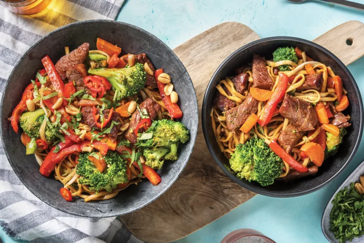

Beef & Broccoli Stir-Fry
with Udon Noodles

Spice up your night (and your tastebuds!) with this
speedy stir-fry sensation that's sure to delight the whole
family. Tender beef coated in a ginger-infused marinade is
the star of the show, supported by an array of colourful
veggies.
Ingredients
- 1 head broccoli
- 2 unit carrot
- 2 knob of ginger
- 3 clove of garlic
- 1 bag of coriander
- 1 unit long red chilli
- 2 packet udon noodles
- 1 tub of sesame oil blend
- 1 packet of beef strips
- 1 sachet oyster sauce
- 1 unit of capsicum
- 1 packet roasted peanuts
Steps
- Bring a large saucepan of water to the boil. Cut the
broccoli into small florets and roughly chop the stalk.
Thinly slice the carrot (unpeeled) into halfmoons.
Thinly slice the capsicum. Finely grate the ginger.
Finely chop the garlic (or use a garlic press).
Roughly chop the coriander. Thinly slice the long red
chilli (if using).
- Add the udon noodles to the boiling water and cook
until tender, 3 minutes. Drain the noodles.
-
While the noodles are boiling, in a medium bowl
combine the ginger, garlic, sesame oil blend, honey,
soy sauce, oyster sauce and 2 tbs water.
- Heat a large frying pan over a high heat with a
drizzle of olive oil. Add the broccoli, carrot and
capsicum, and a splash of water and cook until tender,
5-6 minutes. Transfer to a bowl. Return the frying pan
to a high heat with a drizzle of olive oil. When the
oil is hot, add 1/3 of the beef strips and cook,
tossing, until browned, 1-2 minutes. Transfer to a
plate and repeat with the remaining beef strips.
-
Return the frying pan to a medium-high heat and add
the noodles, veggies, beef and any resting juices to
the pan. Add the oyster sauce mixture and toss to coat.
Simmer until thickened slightly, 2 minutes.
- Divide the beef and broccoli noodles between plates
and top with the roasted peanuts, coriander and chilli
(if using).